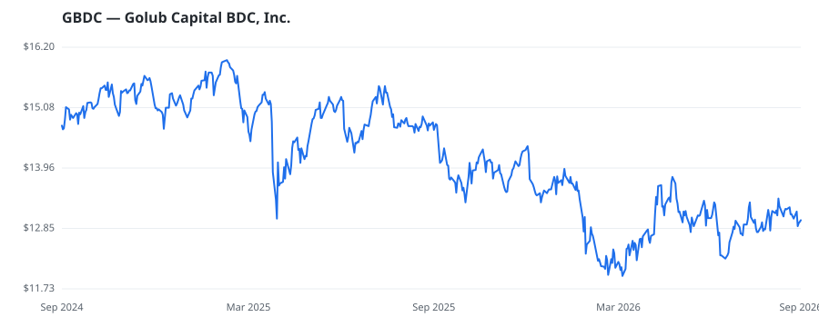

bullish · bearish · n/a — dots: price>SMA10 · SMA10>SMA50 · SMA50>SMA200 · up>down volume (20d)
Other · mid cap

Golub Capital BDC Inc. is an externally managed, closed-end, non-diversified management investment company. Its investment objective is to generate current income and capital appreciation by investing in senior secured and one-stop loans in U.S. middle-market companies. It also invests in second-lien and subordinated loans, warrants, and minority equity securities in U.S. middle-market companies. The company generally invests in securities rated below investment grade by independent rating agencies, or those that would be rated below investment grade if evaluated. The company operates in the U · website
| Revenue | $396.8M | Net income | $376.6M |
|---|---|---|---|
| Operating income | — | Diluted EPS | $1.42 |
| Assets | $9.0B | Equity | $4.0B |
| Fund | Fund alpha vs SPY | Position | % of book |
|---|---|---|---|
| Arnhold LLC | +26% | $20M | 1.4% |
| Adams Asset Advisors, LLC | +10% | $2M | 0.3% |
| Ehrenkranz Partners L.P. | +11% | $1M | 0.6% |
Hedge data: SEC EDGAR 13F · ranked funds beat SPY in >50% of their quarters · fund alpha = mirror-portfolio return minus SPY.